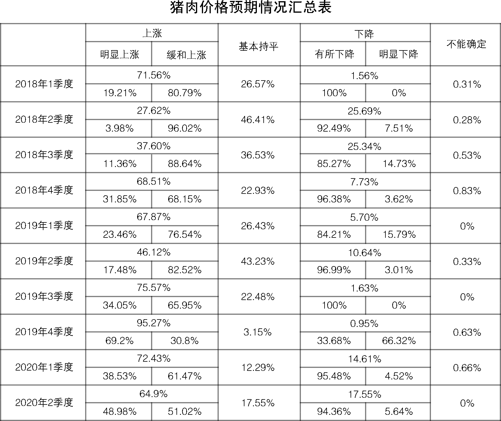
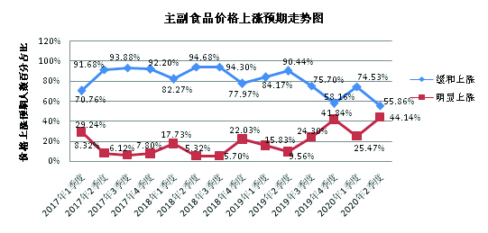

2020年二季度居民消费价格预期调查报告
参加二季度居民消费价格预期调查的专家及相关专业人士302人，收回有效问卷302份。受新冠肺炎疫情和生猪价格波动的影响，二季度（本期）居民消费价格总水平和主副食品价格继续以缓涨预期为主，随着国内疫情防控形势转好，看涨预期较上期有所减弱，较去年同期有所增强。疫情对我省房地产市场的影响总体有限可控。二季度，我省商品房市场价格继续保持平稳预期，与上期和去年同期相比，看涨预期均有明显降低。
一、居民消费价格总水平预期继续缓涨
二季度，预计居民消费价格总水平上涨220人，占比72.85%；预计基本持平44人，占比14.57%；预计有所下降37人，占比12.25%；预计不能确定1人，占比0.33%。
调查结果表明，由于国内疫情传播基本阻断，海外输入风险持续加大，二季度有超七成的人预计居民消费价格总水平上涨，其中预计缓和上涨的人数占六成；预计居民消费价格总水平基本持平和下降的人数相近，均略超一成。总体来看，绝大多数人持居民消费价格总水平上涨预期，并以缓涨为主。
从居民消费价格总水平预期走势看，与上期86.8%的人预计居民消费价格总水平上涨相比，本期减少了13.95个百分点；与去年同期的48.22%相比，本期增加了24.63个百分点。
与上期10.23%的人预计居民消费价格总水平基本持平相比，本期增加了4.34个百分点；与去年同期的45.95%相比，本期减少了31.38个百分点。
二季度居民消费价格总水平下降预期仍处低位占比，与上期的2.97%和去年同期的5.83%相比，分别增加了9.28和6.42个百分点。
调查表明，与上期相比，本期居民消费价格总水平继续以缓涨预期为主，但较上期看涨预期有所下降；与去年同期相比，本期看涨预期明显升温，由稳中缓涨预期转为缓涨预期。
二、主副食品价格预期保持缓涨
二季度，预计主副食品价格上涨213人，占比70.53%；预计基本持平48人，占比15.89%；预计下降40人，占比13.25%；预计不能确定1人，占比0.33%。
调查结果表明，约七成的人预计二季度主副食品价格上涨，其中预计缓和上涨人数占比超五成；预计主副食品价格基本持平和下降的人数相近，均超一成。总体来看，绝大部分人预计主副食品价格上涨，并以缓涨为主。
从主副食品价格预期走势看，与上期88.12%的人预计主副食品价格上涨相比，本期减少了17.59个百分点；与去年同期的44.01%相比，本期增加了26.52个百分点。
与上期9.57%的人预计主副食品价格基本持平相比，本期增加了6.32个百分点；与去年同期的43.69%相比，本期减少了27.8个百分点。
与上期2.31%的人预计主副食品价格下降相比，本期增加了10.94个百分点；与去年同期相比，则变化不大。
调查表明，二季度主副食品价格继续保持缓涨预期，与上期相比，持看涨预期人数占比有所回落；与去年同期相比，持看涨预期人数占比则明显提升。
大米、食用油和猪肉价格预期：二季度预计大米价格上涨124人，占比41.06%；基本持平159人，占比52.65%；有所下降18人，占比5.96%；不能确定1人，占比0.33%。预计食用油价格上涨123人，占比40.73%；基本持平161人，占比53.31%；有所下降17人，占比5.63%；不能确定1人，占比0.33%。预计猪肉价格上涨196人，占比64.9%；基本持平53人，占比17.55%；下降53人，占比17.55%。
调查表明，受疫情影响，二季度大米和食用油价格均呈稳中缓涨预期，与上期相比，对大米价格持看涨预期的人数占比明显增多，食用油价格预期变化不大；与去年同期相比，大米和食用油价格预期均由平稳预期转为稳中缓涨预期，看涨预期增长比较明显。在新冠肺炎疫情、非洲猪瘟和春节因素的叠加影响下，春节前后我省猪肉市场价格持续攀升，成为CPI连续两个月“破5”的重要推手。3月中旬以来，随着国内疫情防控形势转好，生猪产能逐步恢复，猪肉价格从前期较高水平连续回落，市场看涨情绪也随之降温。调查数据也验证了这一点，二季度猪肉价格虽仍以缓涨预期为主，但与上期相比，持上涨预期人数占比有所下降。二季度，在生猪产能稳步恢复的情况下，猪肉供应将得到改善，预计猪肉价格也会随之回落，但考虑到当前生猪产能仍处历史低位，加之海外疫情发展对猪肉进口的冲击，整体供给偏紧局面恐还将持续一段时间。物价稳则民心稳，当前猪肉价格仍处高位，各级政府和相关部门仍需继续密切关注生猪市场价格变化，加强监测预警和产销对接，并适时做好冻猪肉收储、市场投放和价格补贴发放等工作，确保猪肉价格基本稳定，困难群众生活不受影响。



三、商品房价格继续保持平稳预期
二季度，预计商品房总体价格上涨87人，占比28.81%；预计总体价格基本持平169人，占比55.96%；预计总体价格下降43人，占比14.23%；预计不能确定3人，占比0.99%。
调查结果表明，近三成的人预计二季度商品房总体价格上涨；超五成的人预计商品房总体价格基本持平；超一成的人预计商品房价格下降。总体来看，二季度商品房总体价格以平稳预期为主。
从商品房价格预期走势看，二季度商品房总体价格上涨预期有所回落，较上期减少了9.55个百分点；与去年同期的41.1%相比，减少12.29个百分点。
与上期54.75%的人预计商品房总体价格基本持平相比，本期持看平预期的人数略有增加，增加1.21个百分点；与去年同期的47.9%相比，本期增加了8.06个百分点。
与上期6.89%的人预计商品房总体价格下降相比，本期持下降预期的人数有所上升，增加7.34个百分点；与去年同期的10.68%相比，增加3.55个百分点。
调查表明，二季度商品房总体价格继续呈平稳预期，相对于上期，持看涨预期人数占比继续回落；与去年同期相比，本期持看涨预期人数占比回落明显，由稳中缓涨预期转为平稳预期。
从全省各地商品房价格预期情况来看，与上期相比, 全省各地商品房价格看涨预期普遍有所回落。其中，常州市商品房价格以缓涨预期为主；南通商品房价格以稳中缓涨预期为主；镇江商品房价格以稳中缓降预期为主；其余南京、无锡、徐州、苏州、连云港、淮安、盐城、扬州、泰州、宿迁等10个市商品房价格以看平预期为主。
作为国民经济的重要组成部分，房地产在我省经济发展中发挥着“压舱石”和“稳定器”的作用，具有很强的韧性。疫情之下，销售缩量与施工暂停成为了房地产行业的常态，短期内必然会使房企资金承压，但疫情期间积压的刚性购房需求并不会因疫情的出现而消失，随着疫情防控形势转好，这部分需求将集中释放，所以疫情对房地产市场的影响是短期的、可控的。为缓解疫情对房地产市场的冲击，近期，省内的南京、无锡、苏州等城市均出台了针对性政策，包括延期或者分期缴纳土地出让款、调整预售监管条件、延期缴纳税款、减免缴纳房产税和城镇土地使用税等一系列纾困房企的政策措施，且央行采取的降准降息举措也将对房地产市场形成间接利好，但这并不意味着房地产调控的放松。近期，财政部、统计局、央行等部门已多次重申“房住不炒”、“稳地价、稳房价、稳预期”的调控主基调不会变，结合调查结果分析，我省房地产市场发展趋势仍将以“稳”为主。二季度，前期积压的购房需求有望集中释放，届时成交也将企稳回升，省内个别住房消费的热点城市不排除房价会有进一步上涨的可能，同时部分房企可能会因消费需求不足、资金回笼受限而面临偿债与资金压力，各级政府及有关部门要密切关注后疫情时期的房地产市场变化以及疫情对房企的潜在和滞后影响，因城因势精准施策，合理引导住房消费，确保房地产市场平稳健康运行。
江苏省物价局-江苏省物价局网站
二○二○年三月